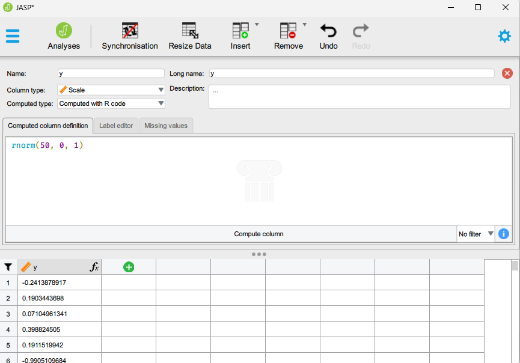
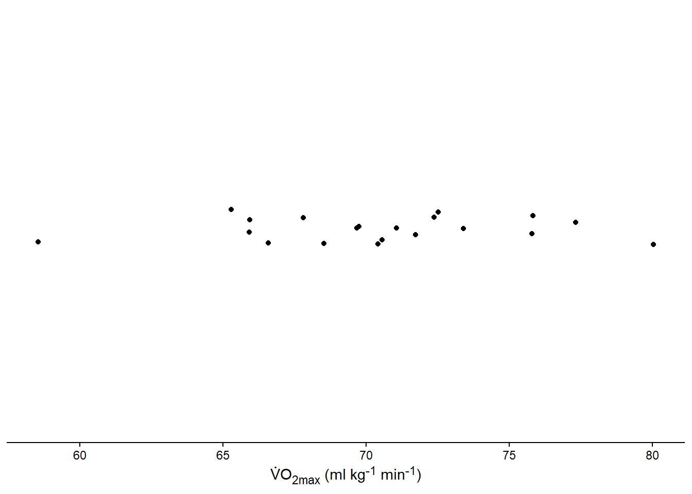
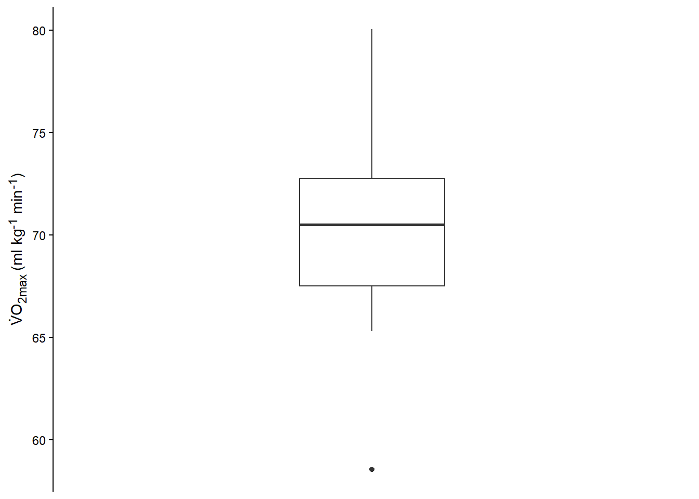
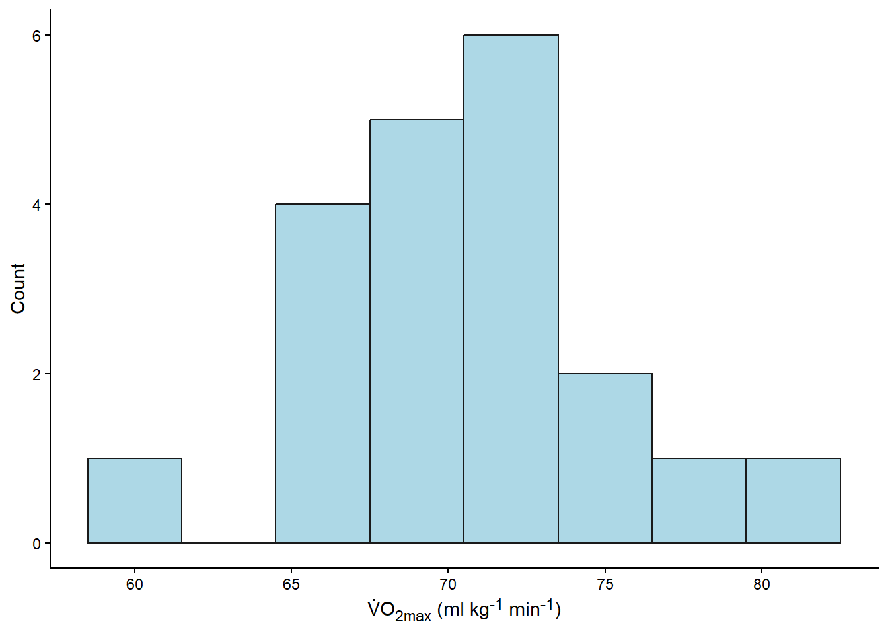
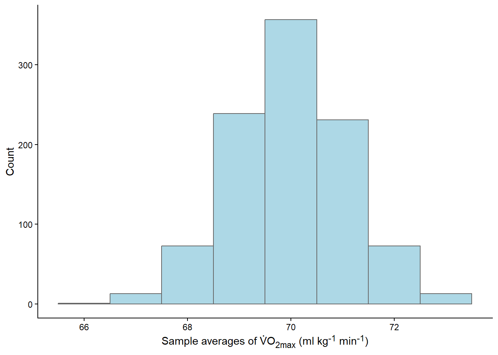
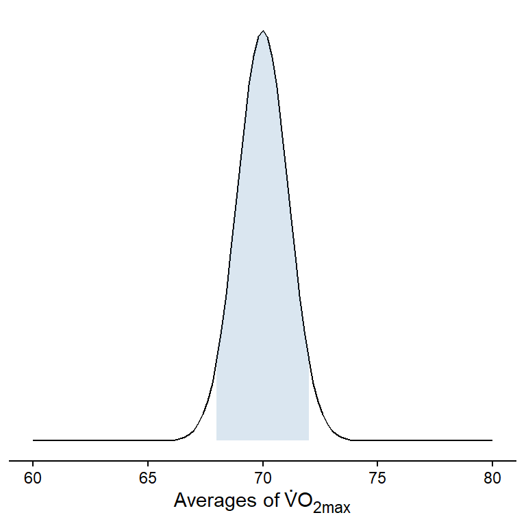
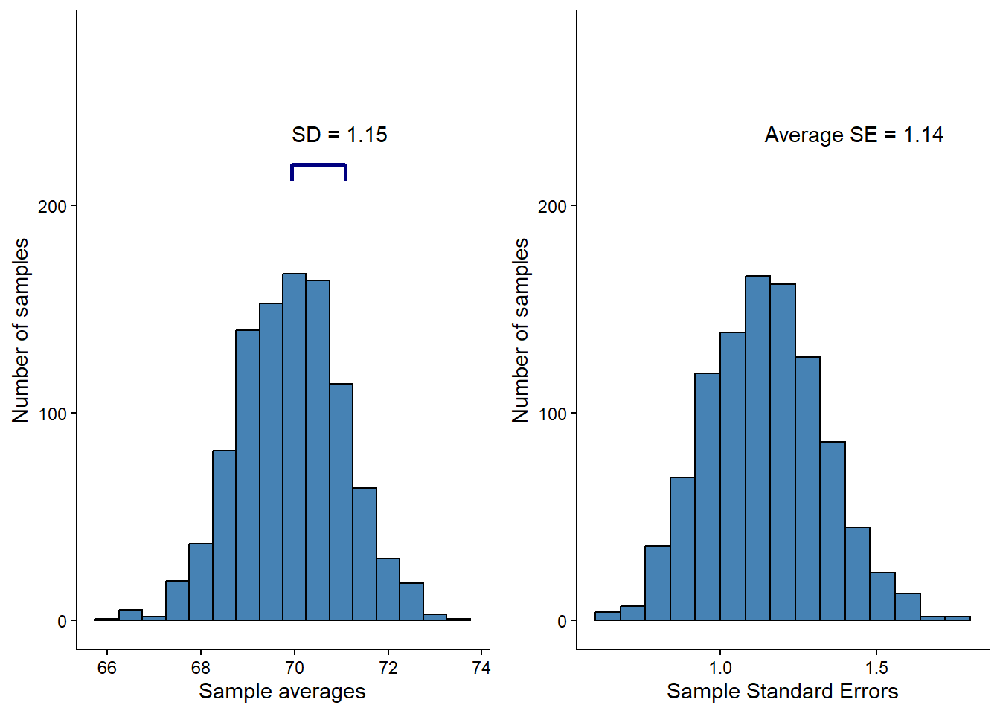
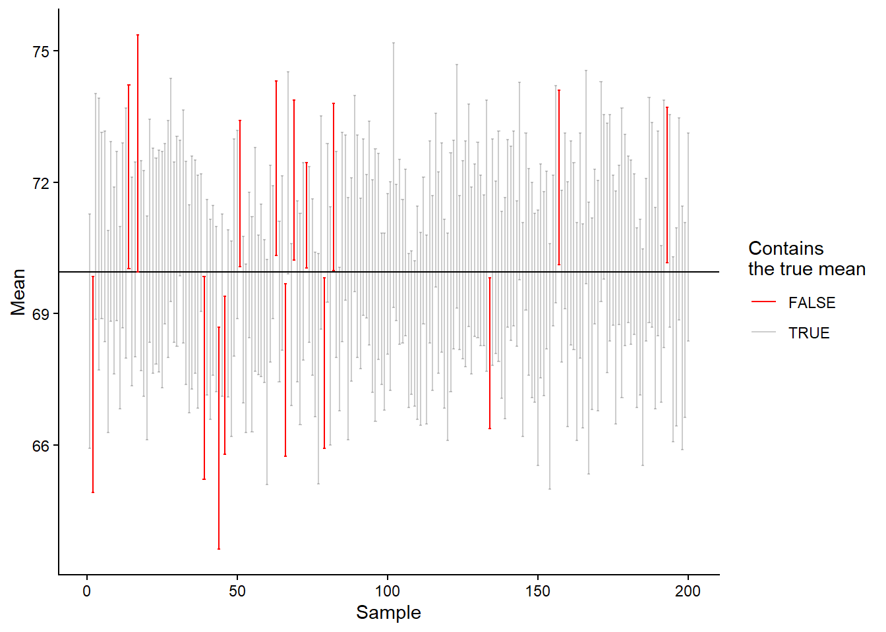
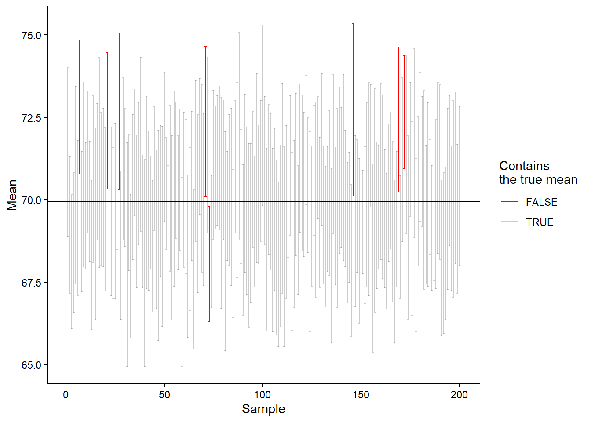

{kind=link}
y <- rnorm(50, 0, 1)13 Samples, populations, estimates and their uncertainty
Scientific studies rarely gather all potential data on the phenomena under study. Not all data are available to us due to, e.g., practical or economic constraints. We therefore have no direct way, e.g., to study all older adults’ responses to training or the relationship between strength and performance in all cyclists, etc. Thus, the scientist faces the challenge of drawing conclusions about the world based on a limited set of observations.
All possible observations are often referred to as the population while the data set we have access to is called the sample. When we make claims about the population using a sample, we draw an inference. Our ability to accurately draw inferences (or conclusions) about the population from our sample depends on how we gathered the data. A sample is unbiased when it represents the population. Through random sampling from the population, we can be confident that, in most cases, we have a representative sample free of bias. Bias may result from a systematic aspect of our sampling scheme, e.g., when studying healthy individuals’ responses to exercise, recruitment to the study may introduce bias because we are more likely to recruit participants who want to exercise. Possibly, recruited individuals would respond differently than individuals not willing to exercise (see (Spiegelhalter 2019, Ch. 3)).
We can characterize a sample using descriptive statistics. For example, a continuous variable such as VO2max can be described based on its central tendency (like the mean, \(\bar{y}\)) and variation (standard deviation, \(\operatorname{SD}(y)\)). Such characteristics serve as a simple description of the sample and as estimates of attributes of the population. These estimates can help us make claims about the population with a specified degree of certainty.
13.1 Reading instructions
Before going further, I suggest reading Chapters 7-10 in Spiegelhalter (Spiegelhalter 2019). These chapters are a great start for understanding the concepts discussed below.
13.2 Descriptive statistics and inference
NoteSimulating data in R and Jasp
R and Jasp are great because you can simulate data! In the examples below we will generate data in R, you can copy and paste the code into your R session to run it and answer questions in this lesson. You can also follow along in Jasp. However, assignment of simulated data to variables in Jasp requires that you start by resizing the data set to the desired size (Figure 13.1).
Once the data set is resized, we can use computed variables (Computed with R code) to create variables in Jasp. Jasp ha a number of “whitelisted” functions. These are R functions that are available when computing variables with R code. It is important not to save variables in objects in Jasp, instead when we calculate a variable it should be left as is. For example, in an R code example below we migh have
The assigniment operator (<-) makes y available in the environment as an object. Using Jasp we want to evaluate it directly to “record it” in the data set. The equivalent in Jasp should be:

{kind=link}
R has some additional functionality that makes simulations more powerfull in R compared to Jasp. When we generate data in R we can create a reproducible simulation by using set.seed() to make the random number generator create the same numbers every time. Basically, R generate numbers and if we want R to generate the same numbers every time we have to tell R where to start. set.seed is not a whitelisted function in Jasp, therefore we cannot use this functionality.
In R, this means that before each simulation I will include:
set.seed(1)The number within set.seed is important as it defines where R starts generating numbers.
13.2.1 A simple example
Let’s say that we collect data on VO2max values in trained cyclists (ml kg-1 min-1). We are interested in the average. First we simulate all possible values:
set.seed(1)
vo2max <- rnorm(1000, 70, 5)All possible values? Yes, we create a distribution of values of VO2max in trained cyclists based on the rnorm-function. rnorm simulates random numbers (1000 in this case, let’s imagine that the population is actually this limited) based on an average (in this case 75) and standard deviation (in this case 5). This population is now stored in the object vo2max (or as a variable in the Jasp data set).
We conduct our study and collect data on 20 participants. This represents only 2% of all possible numbers!
Below we use the sample function, this function draws a sample of a fixed size from our collection of random numbers. We store it in an object called samp.
set.seed(1)
samp <- sample(vo2max, 20, replace = FALSE)replace = FALSE makes sure that we do not sample the same numbers more than once. This way our sampling resembles what an ideal real life study would do. In Jasp we could store the sample in a new variable.
The samp object now contain numbers from a possible study. The study has recruited 20 randomly chosen cyclists and measured their VO2max. Let’s describe the sample.
In R we can describe the data using multiple methods, first we will calculate summary statistics.
m <- mean(samp)
s <- sd(samp)Let’s make a graph of the sample. We can represent the sample using points across the range of values (Figure 13.2). You can use the code below to reproduce the figure.
Code
library(tidyverse) # Needed for making the plot!
# ggtext must be installed to create the appropriate axis label
library(ggtext)
df <- data.frame(samp = samp)
df %>%
# Plots our samples on the x axis, and sets all y to 1.
ggplot(aes(samp, y = 1)) +
# Adds points and "jitter" on the y axis
geom_point(position = position_jitter(height = 0.1)) +
# Scales the y axis to better plot the data
scale_y_continuous(limits = c(0,2)) +
# Set the name of the x axis
labs(x = "V̇O~2max~ (ml kg<sup>-1</sup> min<sup>-1</sup>)") +
# Add a theme
theme_classic() +
# The code below modifies the theme of the plot, removing
# the y axis
theme(axis.title.y = element_blank(),
axis.title.x = element_markdown(),
axis.text.y = element_blank(),
axis.ticks.y = element_blank(),
axis.line.y = element_blank()) 
Another plot can be the box-plot (Figure 13.3). Similarly to the above plot you can reproduce our new figure with the code below.
Code
df %>%
# Plots our samples on the y axis, and sets all x to 1.
ggplot(aes(x = 1, samp)) +
# Adds the boxplot
geom_boxplot(width = 0.5) +
# Scales the x axis to better plot the data
scale_x_continuous(limits = c(0,2)) +
# Set the name of the y axis
labs(y = "V̇O~2max~ (ml kg<sup>-1</sup> min<sup>-1</sup>)") +
theme_classic() +
# The code below modifies the theme of the plot, removing
# the x axis
theme(axis.title.x = element_blank(),
axis.text.x = element_blank(),
axis.ticks.x = element_blank(),
axis.line.x = element_blank(),
axis.title.y =element_markdown())
The boxplot (or box-and-whiskers plot (Spiegelhalter 2019, Ch. 2)) summarizes the data and plots the median, the inter-quartile range minimum and maximum, and any outliers.
Spiegelhalter, D. J. 2019. The Art of Statistics : How to Learn from Data. Book. First US edition. Basic Books.
We can also plot the data as a histogram (Figure 13.4).
Code
df %>%
# Plots our samples on the y axis, and sets all x to 1.
ggplot(aes(samp)) +
# Adds the histogram
geom_histogram(binwidth = 3, color = "gray10", fill = "lightblue") +
# Set the name of the y axis
labs(x = "V̇O~2max~ (ml kg<sup>-1</sup> min<sup>-1</sup>)", y = "Count") +
theme_classic() +
# The code below modifies the theme of the plot, removing
# the x axis
theme(axis.title.x =element_markdown())
Both the statistical summaries (created with mean and sd) and the plots are descriptive analyses of the sample. Indirectly, they are also estimates of the population. Next we will more directly make claims about the population.
13.2.2 Inference about the population
When conducting a study, we are really interested in what we can say about the population (i.e., all possible values). In other words, how can we infer the unknown from our data? This is where inferential statistics comes in.
Since we have an estimate of the population mean, we may say that, based on our sample, we believe the mean is close to 70.45. Likely, the population mean is not exactly that. Let’s try another sample:
set.seed(2)
samp2 <- sample(vo2max, 20, replace = FALSE)
# Calculate the mean
m2 <- mean(samp2)
round(c(m, m2),2)[1] 70.45 69.78If you are using Jasp, the next sample can be saved in a new variable, let’s say samp2. Use descriptive statistics to set up a table to compare the different samples.
If we compare the two samples, we can confirm that every time we draw a new sample (or conduct another study), we will get a slightly different estimate of the population mean. How about the variation (standard deviation):
s2 <- sd(samp2)
# Print the results from calculation of SD
round(c(s, s2), 2)[1] 4.87 5.64Indeed, slightly different.
We could continue to sample in this way and record every outcome to build a distribution of means. A convenient way to do this is to apply a function for n number of simulations. We will draw a sample, calculate the mean and store the collection of means in a new variable. This is a basic building block in programming, we tell the computer to do a task multiple times and store the results in a nice format. We will sample with size = 20 and calculate the mean in each iteration. The results will be stored in a vector in our R example below.
# set the seed
set.seed(123)
means <- unlist(lapply(1:1000, function(i) mean(sample(vo2max, 20, replace = FALSE))))When using Jasp, we can do the same basic operation, however, we do not need to convert the output from lapply, your Jasp session could look like this:
{kind=link}
vo2max is the population variable, sample is the first sample, sample2 is the second. The code is used to construct the means variable.
The results from this process can made into a figure. We will use the histogram to represent the distribution of sample means from our repeated samples.
Code
ggplot(data = data.frame(means), aes(means)) +
geom_histogram(fill = "lightblue", color = "gray40", binwidth = 1) +
labs(x = "Sample averages of V̇O~2max~ (ml kg<sup>-1</sup> min<sup>-1</sup>)", y = "Count") +
theme_classic() +
theme(axis.title.x = element_markdown())
What just happened? We conducted 1000 studies! From each study, we calculated the mean and stored it. Most of the means were very close to 70, as shown in the graph (Figure 13.6). The distribution of the means is bell-shaped, resembling a Normal distribution.
Distributions can be described in different ways depending on what distribution we are takling about. The most commonly used, the normal (or Gaussian) distribution can be described by the mean and the standard deviation. Some characteristics of the normal distribution will help us use it in drawings conclusion. E.g., if we collect all possible measurements that lies about 2 standard deviations below and above the mean we capture 95% of the data.
As the distribution of means is approximately normal we can determine where most of the means are. Let’s say that we are interested in determining a range where 95% of the means can be found. To do this we can use a theoretical distribution created by estimates from the distribution (the mean and standard deviation).

95% of all means are under the shaded area! This corresponds to a range of values that can be calculated in R, or by hand from using estimates in Jasp:
lower <- mean(means) - 1.96 * sd(means)
upper <- mean(means) + 1.96 * sd(means)What does this mean? Well, we have drawn 1000 samples from our bag of numbers (representing all possible outcomes). We then calculated the mean of each sample and created a distribution of means. The mean of means is very, very close to the true (population) mean.
Code
cat(paste("True mean:",
round(mean(vo2max),3),
"\nMean of the sample distribution: ",
round(mean(means),3)))True mean: 69.942
Mean of the sample distribution: 69.996We have also calculated a range were 95% of all means are located, we did this by approximating the actual values using the normal distribution. The range that captures 95% of all means goes from 67.82 to 72.17
13.2.3 Estimation of the sampling distribution
What we did above is a theoretical example, as we never conduct 1000 studies in real life. We will never get a distribution of means from many studies. However, we can estimate this theoretical distribution of means using a sample! This is one of the most important concepts in statistics! This means that by doing one study, we can estimate the results of doing many studies. This is the basis of the most commonly used branch of statistics, frequentist statistics.
13.2.3.1 The standard error of a sample is an approximation of the standard deviation of the sampling distribution
The headline says it all. Using the sample, we can calculate the standard deviation, which, in turn, can be used to calculate the standard error. The standard error is an estimate of the standard deviation of the theoretical distribution of means. From our previous results, we can see that the standard error of the mean in our samples is similar to the standard deviation of the distribution of averages (the sampling distribution). Let’s see how it works in another example.
Using R, we can simulate this concept. We will create a new set of random samples (or studies) and calculate statistics from them. The results from this simulation can be seen in Figure 13.8.
Code
library(cowplot) # to combine plots
# set the seed
set.seed(9)
# create the data frame
results <- data.frame(mean = rep(NA, 5000),
sd = rep(NA, 5000))
# The rep function creates a vector full of NA
# each NA can be replaced with a mean
# Second we build the for loop
for(i in 1:5000){
samp <- sample(x = vo2max, size = 20, replace = FALSE)
results[i, 1] <- mean(samp)
results[i, 2] <- sd(samp)
}
results <- results %>%
# Calculate the standard error of each sample
mutate(se = sd/sqrt(20))
# Plot the sample averages in a histogram
#
#
p1 <- results %>%
slice_head(n = 1000) %>% # select the first 1000 rows
# Make a graph containing estimates and empirical values
ggplot(aes(mean)) + geom_histogram(binwidth = 0.5,
fill = "steelblue",
color = "black") +
theme_classic() +
# Add a line representing the standard deviation of the distribution of means
annotate(geom = "segment",
y = c(220, 220, 220),
yend = c(212, 220, 212),
x = c(mean(results$mean), mean(results$mean), mean(results$mean) + sd(results$mean)),
xend = c(mean(results$mean), mean(results$mean) + sd(results$mean), mean(results$mean) + sd(results$mean)),
lty = 1,
color = "navy",
size = 1) +
# Add text to describe SD of sampling distribution
annotate(geom = "text",
x = mean(results$mean),
y = 235,
hjust = 0,
label = paste0("SD = ",
round(sd(results$mean), 2))) +
coord_cartesian(ylim = c(0, 280)) +
labs(x = "Sample averages",
y = "Number of samples")
# Create a plot of calculated SE
p2 <- results %>%
slice_head(n = 1000) %>% # select the first 1000 rows
ggplot(aes(se)) + geom_histogram(binwidth = 0.08,
fill = "steelblue",
color = "black") +
theme_classic() +
# Add text to describe SD of sampling distribution
annotate(geom = "text",
x = mean(results$se),
y = 235,
hjust = 0,
label = paste0("Average SE = ",
round(mean(results$se), 2))) +
coord_cartesian(ylim = c(0, 280)) +
labs(x = "Sample Standard Errors",
y = "Number of samples")
plot_grid(p1, p2, ncol = 2)
In the left panel of Figure 13.8, the blue line represents the standard deviation of the distribution of the sample mean. In the right panel, we can see the distribution of standard errors across all samples. The variation (spread) of the sampling distribution corresponds to the long-run average of the standard error calculated in each sample. On average, the standard error of the mean is a good estimate of the variation in the distributions of means. The standard error (SE) of the mean is calculated as:
\[\operatorname{SE} = \frac{s}{\sqrt{n}}\] where \(s\) is the sample standard deviation, \(n\) is the number of observations.
Remember that we can use the standard deviation to calculate a range of values containing, let’s say, 95% of all values in a normal distribution. Since we can estimate the standard deviation of the sampling distribution of averages from a single sample, we can do so. When estimating this range using a sample, we are creating a confidence interval!
13.2.4 A confidence interval for the mean
A confidence interval for the mean based on a sample can be calculated as:
\[\text{Lower limit}=\operatorname{Mean} - 1.96 \times \operatorname{SE}\] \[\text{Upper limit}=\operatorname{Mean} + 1.96 \times \operatorname{SE}\]
(This assumes that we are using the normal distribution).
The interpretation of the confidence interval is that, in repeated sampling, 95% of confidence intervals will contain the population mean. Unfortunately, we do not know whether our specific interval does so. The interpretation follows from the fact that we estimate the variation in the theoretical sampling distribution. Five percent of the time, we will be wrong. To test whether the theory is correct, let’s calculate confidence intervals from our simulated data and see how often we capture the true mean.
Code
# Create new variables with upper and lower limits of the confidence interval
cis <- results %>%
# Using the normal distribution
mutate(lower.limit = mean - 1.96 * sd/sqrt(20),
upper.limit = mean + 1.96 * sd/sqrt(20)) %>%
# Test if the true mean is within the limits
# If the true mean is above the lower limit and below the upper limit then TRUE
# otherwise FALSE
mutate(true.mean = if_else(mean(vo2max) > lower.limit & mean(vo2max) < upper.limit,
TRUE, FALSE))
# Plot the data, only plotting 200 data points to make it suitable for every computer
cis[1:200, ] %>%
ggplot(aes(seq(1:nrow(.)),
y = mean,
color = true.mean, # set a specific color
alpha = true.mean)) + # and transparency to
# intervals containing and not containing the true mean
# add a line showing the true mean
geom_hline(yintercept = mean(vo2max)) +
# add errorbars showing each interval
geom_errorbar(aes(ymin = lower.limit, ymax = upper.limit)) +
# scale the colors and transparency. Intervals not containing
# the true mean are red.
scale_color_manual(values = c("red", "black")) +
scale_alpha_manual(values = c(1, 0.2)) +
# Set label texts
labs(x = "Sample",
y = "Mean",
alpha = "Contains\nthe true mean",
color = "Contains\nthe true mean") +
# Change the theme
theme_classic()
# Calculate the proportions of intervals not containing the true mean
longrun <- round(100 * (sum(cis$true.mean == FALSE) / sum(cis$true.mean == TRUE)), 2)
# Almost 5%!
As we can see in Figure 13.9, we are really close to the expected 5%, our result is actually 6.66%. This means that if we do a study 1000 times and calculate the average and its confidence interval, in about 5% of the studies, we will miss the true mean. Seen from the other side, about 95% of the time, our interval will contain the true mean.
But why isn’t the result precisely 5%? It is because the normal distribution is not a calibrated distribution for approximating a sampling distribution when sample sizes are small. We can instead use the t-distribution. (This distribution has something to do with beer!1)
1 See here for the interesting connection between the t-distribution and beer.

The t-distribution changes shape depending on the number of data points in our sample. This means that a smaller sample size will be reflected in the estimated sampling distribution through a wider interval. In the code and plot (Figure 13.10) below, we have changed the calculation of the 95% confidence interval; we are now using the t-distribution.
Code
# Creat new variables with upper and lower limits of the confidence interval
cis <- results %>%
# Using the t-distribution
mutate(lower.limit = mean - qt(0.975, 20-1) * sd/sqrt(20),
upper.limit = mean + qt(0.975, 20-1) * sd/sqrt(20)) %>%
# Test if the true mean is within the limits
# If the true mean is above the lower limit and below the upper limit then TRUE
# otherwise FALSE
mutate(true.mean = if_else(mean(vo2max) > lower.limit & mean(vo2max) < upper.limit,
TRUE, FALSE))
# Plot the data, only plotting 100 data points to make it suitable for every computer
cis[201:400, ] %>%
ggplot(aes(seq(1:nrow(.)),
y = mean,
color = true.mean, # set a specific color
alpha = true.mean)) + # and transparency to
# intervals containing and not containing the true mean
# add a line showing the true mean
geom_hline(yintercept = mean(vo2max)) +
# add errorbars showing each interval
geom_errorbar(aes(ymin = lower.limit, ymax = upper.limit)) +
# scale the colors and transparency. Intervals not containing
# the true mean are red.
scale_color_manual(values = c("red", "black")) +
scale_alpha_manual(values = c(1, 0.2)) +
# Set label texts
labs(x = "Sample",
y = "Mean",
alpha = "Contains\nthe true mean",
color = "Contains\nthe true mean") +
# Change the theme
theme_classic()
# Calculate the proportions of intervals not containing the true mean
longrun <- round(100 * (sum(cis$true.mean == FALSE) / sum(cis$true.mean == TRUE)), 2)
We are getting closer, from 5000 simulations of sampling from a population and creation of 95% confidence intervals based on the t-distribution, we end up with `r 100 - longrun% of confidence intervals containing the actual population mean. The t-distribution is better calibrated for small samples. The two distributions (normal and t) are very similar as we approach sample sizes of \(n=30\).
13.2.5 Sample size and confidence intervals
The mean, standard deviation, and the sample size determine the width of confidence intervals. As the sample size decreases, the width increases. This means that when we have smaller samples, we will have less precision in our best guess of the population mean. We will still cover the true mean 95% of the time (if we repeat the study), but the range of possible true mean values will be wider.